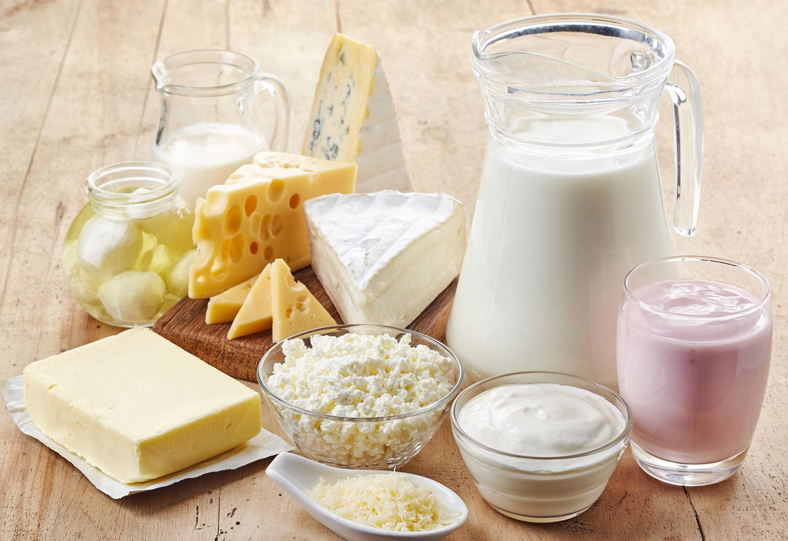
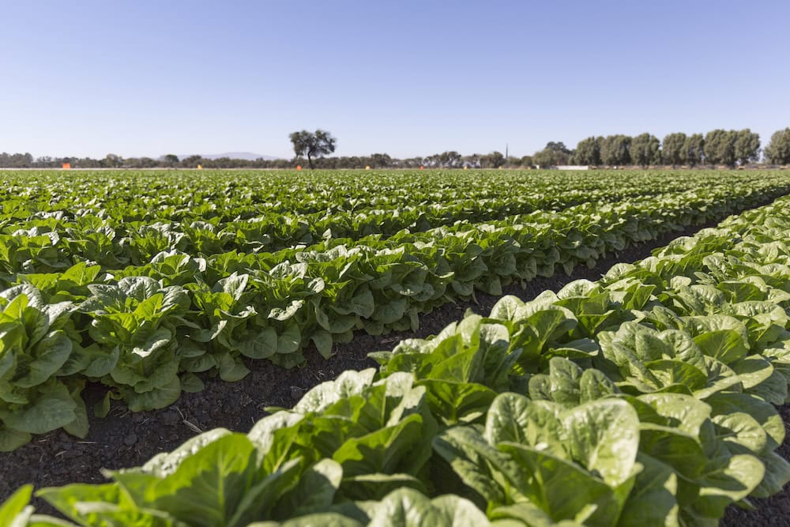
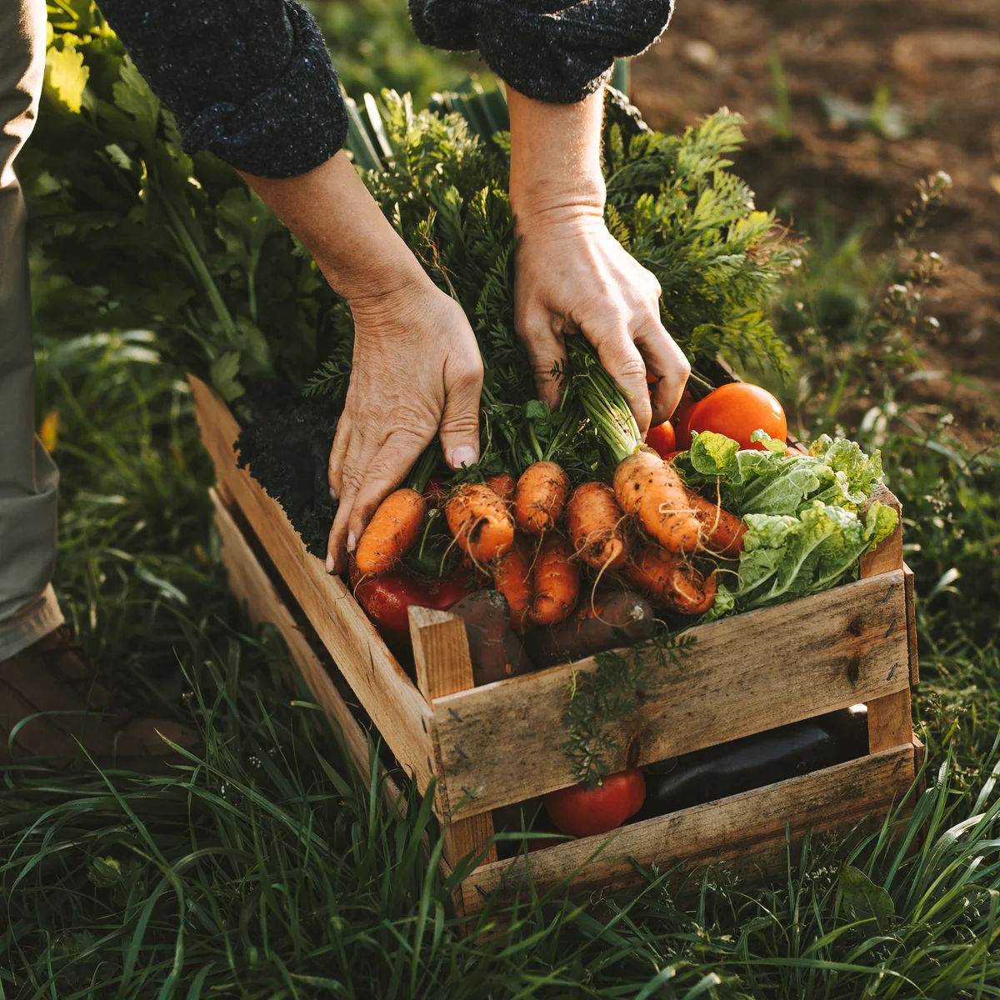

Organic Dairy Products
Fresh, high-quality milk, cheese, and yogurt from grass-fed cows. Sustainably produced with no artificial additives—pure, natural, and delicious.
Fresh Lettuce Bunches
Handpicked fresh lettuce, perfect for your salads. Available for local pickup only.
Price: $2 per bunch
Update from Greenfield Farms
We’ve just planted a new crop of organic carrots. Stay tuned for updates on our farm activities!
Upcoming Seasonal Market
Join us at the local farmers' market next weekend! We’ll have fresh produce and handcrafted goods from our farm.